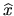

The linear equality constrained least squares (LSE) problem is
The LSE problem is solved by the driver routine xGGLSE
(see section 4.6).
Let 
be the value of x computed by xGGLSE.
The approximate error bound
EPSMCH = SLAMCH( 'E' )
* Get the 2-norm of the right hand side C
CNORM = SNRM2( M, C, 1 )
print*,'CNORM = ',CNORM
* Solve the least squares problem with equality constraints
CALL SGGLSE( M, N, P, A, LDA, B, LDA, C, D, Xc, WORK, LWORK, IWORK, INFO )
* Get the Frobenius norm of A and B
ANORM = SLANTR( 'F', 'U', 'N', N, N, A, LDA, WORK )
BNORM = SLANTR( 'F', 'U', 'N', P, P, B( 1, N-P+1 ), LDA, WORK )
MN = MIN( M, N )
IF( N.EQ.P ) THEN
APPSNM = ZERO
RNORM = SLANTR( '1', 'U', 'N', N, N, B, LDB, WORK(P+MN+N+1) )
CALL STRCON( '1', 'U', 'N', N, B, LDB, RCOND, WORK( P+MN+N+1 ),
$ IWORK, INFO )
BAPSNM = ONE/ (RCOND * RNORM )
ELSE
* Estimate norm of (AP)^+
RNORM = SLANTR( '1', 'U', 'N', N-P, N-P, A, LDA, WORK(P+MN+1) )
CALL STRCON( '1', 'U', 'N', N-P, A, LDA, RCOND, WORK( P+MN+1 ),
$ IWORK, INFO )
APPSNM = ONE/ (RCOND * RNORM )
* Estimate norm of B^+_A
KASE = 0
CALL SLACON( P, WORK( P+MN+1 ), WORK( P+MN+N+1 ), IWORK, EST, KASE )
30 CONTINUE
CALL STRSV( 'Upper', 'No trans', 'Non unit', P, B( 1, N-P+1 ),
$ LDB, WORK( P+MN+N+1 ), 1 )
CALL SGEMV( 'No trans', N-P, P, -ONE, A( 1, N-P+1 ), LDA,
$ WORK( P+MN+N+1 ), 1, ZERO, WORK( P+MN+P+1 ), 1 )
CALL STRSV( 'Upper', 'No transpose', 'Non unit', N-P, A, LDA,
$ WORK( P+MN+P+1 ), 1 )
DO I = 1, P
WORK( P+MN+I ) = WORK( P+MN+N+I )
END DO
CALL SLACON( N, WORK( P+MN+N+1 ), WORK( P+MN+1 ), IWORK, EST, KASE )
*
IF( KASE.EQ.0 ) GOTO 40
DO I = 1, P
WORK( P+MN+N+I ) = WORK( MN+N+I )
END DO
CALL STRSV( 'Upper', 'Trans', 'Non unit', N-P, A, LDA,
$ WORK( P+MN+1 ), 1 )
CALL SGEMV( 'Trans', N-P, P, -ONE, A( 1, N-P+1 ), LDA,
$ WORK( P+MN+1 ), 1, ONE, WORK( P+MN+N+1 ), 1 )
CALL STRSV( 'Upper', 'Trans', 'Non unit', P, B( 1, N-P+1 ),
$ LDB, WORK( P+MN+N+1 ), 1 )
CALL SLACON( P, WORK( P+MN+1 ), WORK( P+MN+N+1 ), IWORK, EST, KASE )
*
IF( KASE.EQ.0 ) GOTO 40
GOTO 30
40 CONTINUE
BAPSNM = EST
*
END IF
* Estimate norm of A*B^+_A
IF( P+M.EQ.N ) THEN
EST = ZERO
ELSE
R22RS = MIN( P, M-N+P )
KASE = 0
CALL SLACON( P, WORK( P+MN+P+1 ), WORK( P+MN+1 ), IWORK, EST, KASE )
50 CONTINUE
CALL STRSV( 'Upper', 'No trans', 'Non unit', P, B( 1, N-P+1 ),
$ LDB, WORK( P+MN+1 ), 1 )
DO I = 1, R22RS
WORK( P+MN+P+I ) = WORK( P+MN+I )
END DO
CALL STRMV( 'Upper', 'No trans', 'Non unit', R22RS,
$ A( N-P+1, N-P+1 ), LDA, WORK( P+MN+P+1 ), 1 )
IF( M.LT.N ) THEN
CALL SGEMV( 'No trans', R22RS, N-M, ONE, A( N-P+1, M+1 ), LDA,
$ WORK( P+MN+R22RS+1 ), 1, ONE, WORK( P+MN+P+1 ), 1 )
END IF
CALL SLACON( R22RS, WORK( P+MN+1 ), WORK( P+MN+P+1 ), IWORK, EST,
$ KASE )
*
IF( KASE.EQ.0 ) GOTO 60
DO I = 1, R22RS
WORK( P+MN+I ) = WORK( P+MN+P+I )
END DO
CALL STRMV( 'Upper', 'Trans', 'Non Unit', R22RS,
$ A( N-P+1, N-P+1 ), LDA, WORK( P+MN+1 ), 1 )
IF( M.LT.N ) THEN
CALL SGEMV( 'Trans', R22RS, N-M, ONE, A( N-P+1, M+1 ), LDA,
$ WORK( P+MN+P+1 ), 1, ZERO, WORK( P+MN+R22RS+1 ), 1 )
END IF
CALL STRSV( 'Upper', 'Trans', 'Non unit', P, B( 1, N-P+1 ), LDB,
$ WORK( P+MN+1 ), 1 )
CALL SLACON( P, WORK( P+MN+P+1 ), WORK( P+MN+1 ), IWORK, EST, KASE )
*
IF( KASE.EQ.0 ) GOTO 60
GOTO 50
60 CONTINUE
END IF
ABAPSN = EST
* Get the 2-norm of Xc
XNORM = SNRM2( N, Xc, 1 )
IF( APPSNM.EQ.0.0E0 ) THEN
* B is square and nonsingular
ERRBD = EPSMCH*BNORM*BAPSNM
ELSE
* Get the 2-norm of the residual A*Xc - C
RNORM = SNRM2( M-N+P, C( N-P+1 ), 1 )
* Get the 2-norm of Xc
XNORM = SNRM2( N, Xc, 1 )
* Get the condition numbers
CNDBA = BNORM*BAPSNM
CNDAB = ANORM*APPSNM
* Get the approximate error bound
ERRBD = EPSMCH*( (1.0E0 + CNORM/(ANORM*XNORM))*CNDAB +
$ RNORM/(ANORM*XNORM)*(1.0E0 + BNORM*ABAPSN/ANORM)*
$ (CNDAB*CNDAB) + 2.0E0*CNDBA )
END IF
For example, if
 ,
,